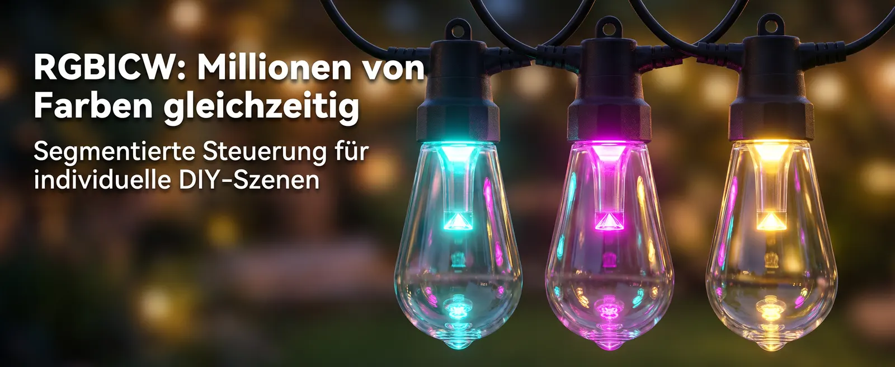
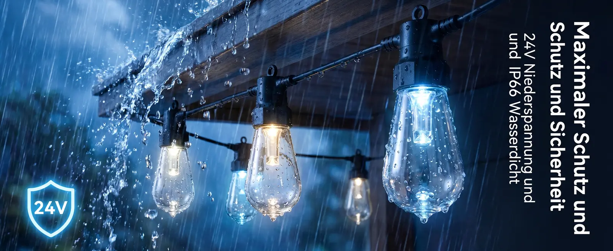
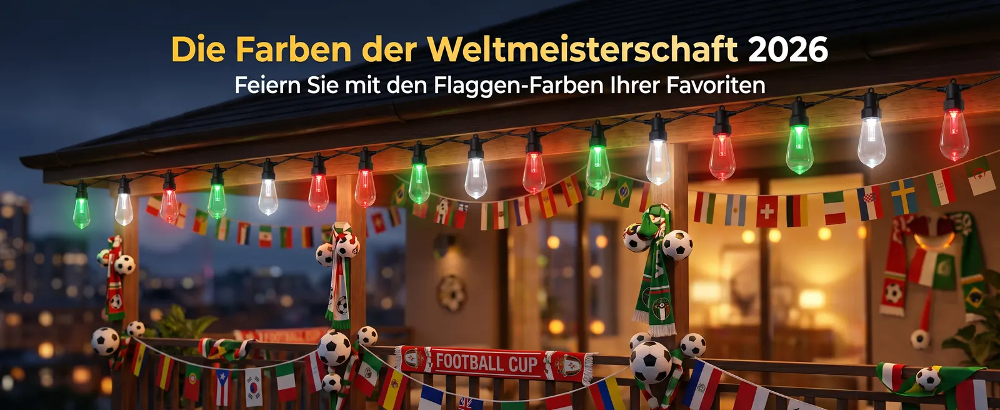
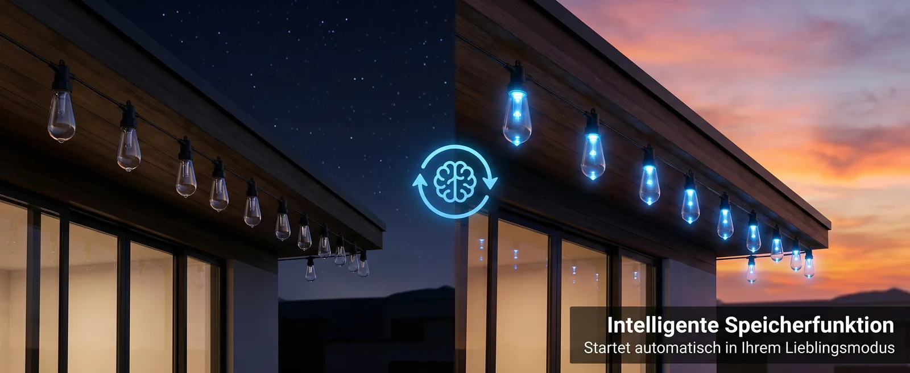

Skip to content
ZCF
.
Home
Fashion
Products
About
View Work
→
← Home
/
Products
/
Lighting
ST48 World Cup-Themed String Lights
Lighting · 11 images
← Back to results
A+




← Previous project
TENS Muscle Stimulator
← Back to results
Return to Home
↗
←
→
Open full-size
×